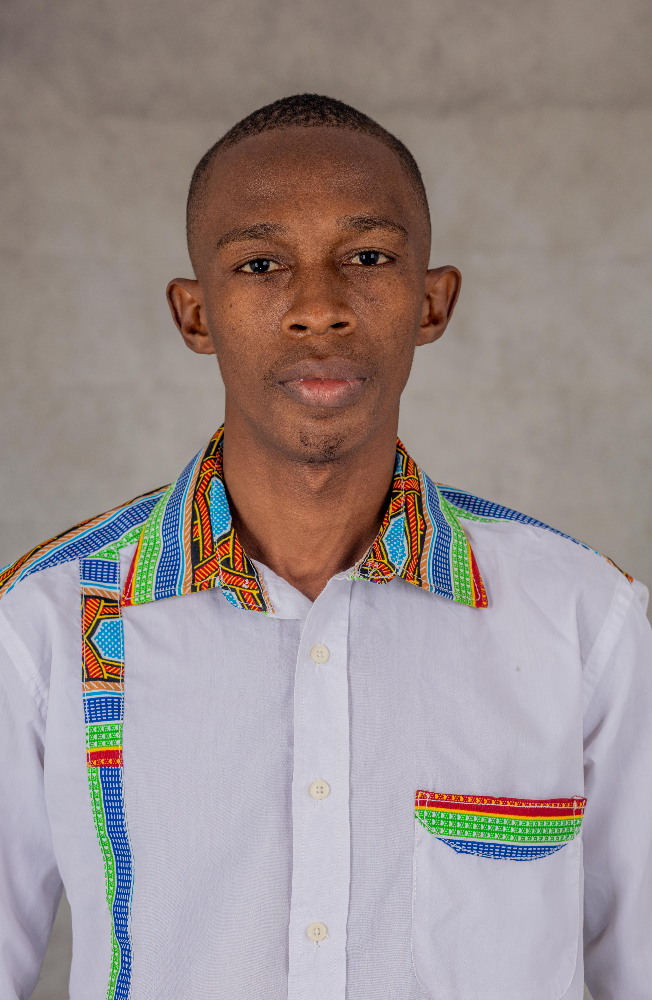
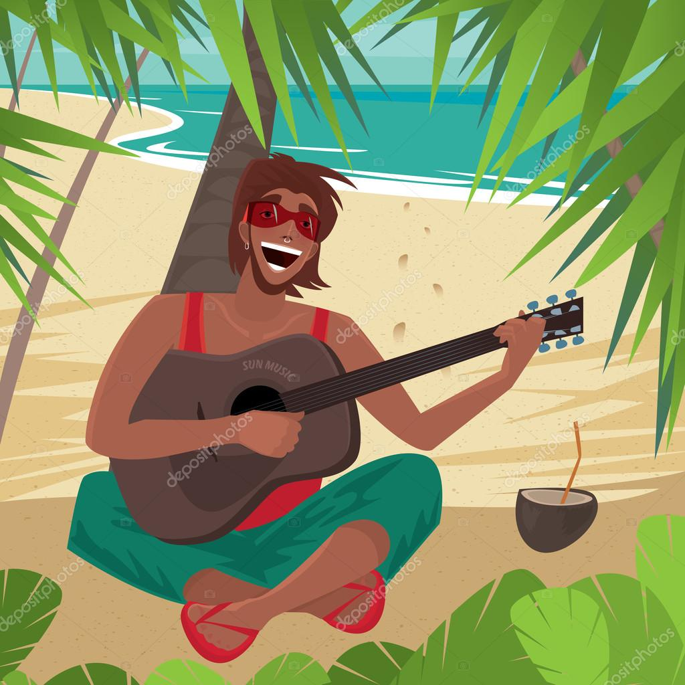

Accueil
Bienvenue sur mon tout nouvau site web
Ici, je vas vous parler un peu de moi.
Cela vous permettra d'avoir un aperçu general sur moi
A propos de moi
Qui suis-je ?
Je m'appelle Kane Issa et j'ai 24 ans. Je suis un developpeur web en herbe.
Titulaire d'un baccalaureat unique et diplomé en MIAGE, j'ai eu à developpé des goûts pour le developpement
web.
Avec le temps, j'ai appris à maitriser les bases du developpement web et à maitriser les langages de
programmation.
Les langages de programmation que j'ai eu à pas mal exploré et apprendre sont le HTML, le CSS, le JavaScript, le
SQL,
et un peu le C, le PHP et aussi le C++ .
Ayant une curiosité sans fin, aussi la determination d'optimiser mes connaissances,
je n'arrete pas de creuser du jour au lendemain pour maitriser ces langages de programmation et
apprendre
de nouvelles compétences.
J'utilise souvent des sites comme le site deW3Schoolsou encore le siteMDN pour la documentation et les tutoriels.
Aussi, de temps en temps, je me m'informe sur les nouvelles technologies et les nouvelles tendances du
developpement web.
Mes passions
Je suis passionné par le developpement web et le design.
Je suis aussi passionné par le sport et la musique.
Mes hobbies
Dans mes temps libre, j'aime faire du sport ou aussi jouer aux jeux videos.
Je suis aussi passionné par la lecture et la musique.
Pour plus me relaxer, j'aime jouer de la guitare au bord de la mer.
J'aime aller dans des coins plutôt tranquilles et paisibles.
Mes projets
Au cours de mes différentes années d'études et de formation, j'ai eu à participer à plusieurs projets dont:- Une application de convertisseur de monnaie realisée avec Angular
- Un site de reservation de billet de voyage realisé avec React
- Un site web de KYC (Know Your Customer) en cours de developpement avec Angular
Mes ambitions
Mon ambition est de devenir un developpeur web full stack incontournable.
Aussi, vu le retard technologique que subit mon pays, je souhaite y être un pionnier dans le developpement web
et egalement dans d'autres domaines du developpement informatique emmergent et innovant pour toujours le tenir à
la tendance.
Je souhite aussi, sur le plan mondial, intervenir dans les defis technologiques et innovants pour toujours être à la pointe de la technologie.
Enfin, je souhaite en tant qu'entrepreneur, créer une entreprise qui va révolutionner le developpement web et le developpement informatique en general.